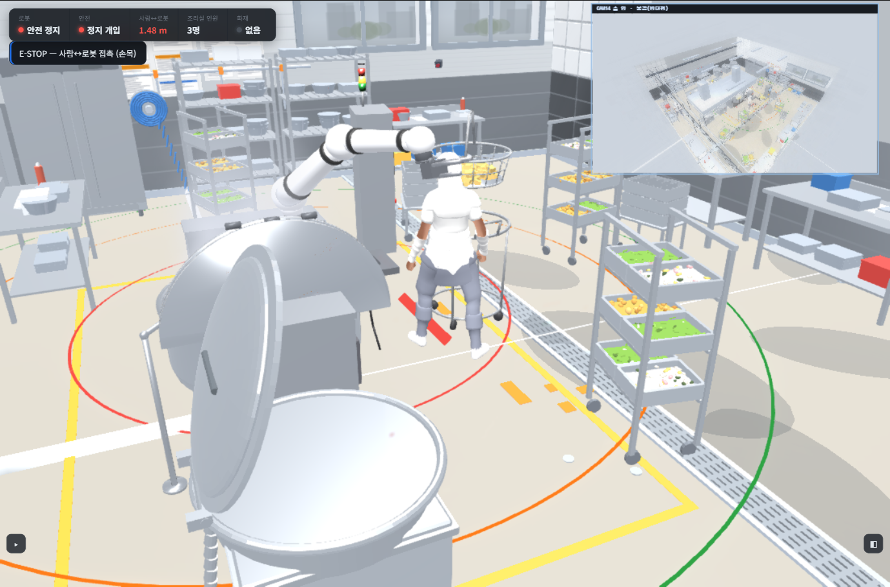
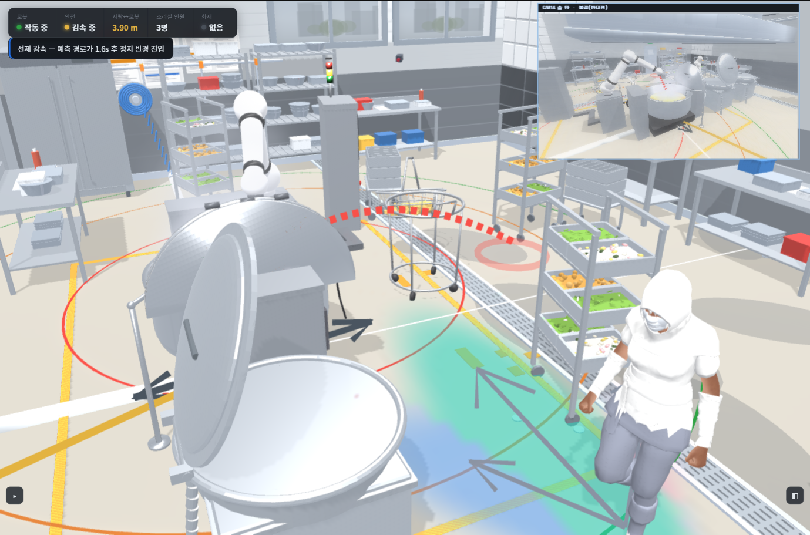

Same scene, same worker path, same robot — the only difference is whether the predictor is on.


This is what the whole pipeline buys. Detection → world fusion → tracking feed a 1.6 s trajectory prediction; when that predicted path is about to enter the stop ring, the robot acts before the person arrives instead of reacting to a contact. Presentation demo — transfer speeds are exaggerated for visibility; the ISO/TS 15066 safety decision is unchanged.